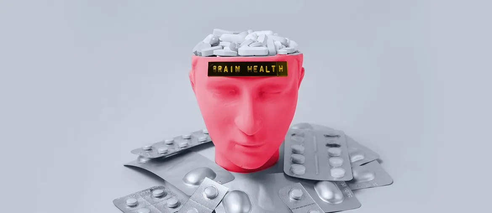

Medical Diagnosis System for European Mental Health Clinics
Healthcare web work with Vue 3, Symfony 6, PHP, MySQL, REST, and secure patient data flows.
Read case studyProposal brief for Nourish Care
Nourish helps care teams plan, record, and coordinate care. The next step is a stronger platform layer that protects speed, data, and trust.
We saw the Tech Lead role for your API Platform Team. It points to legacy migration, reusable Vue modules, and higher load across the Nourish ecosystem.
The signal says Nourish is moving from legacy product paths to an API-first platform. That is hard because care notes, handovers, offline access, and integrations all depend on the same data flow. Public app reviews point to login, sync, and access pain at the point of care. If the migration runs without strong test and release guardrails, support load rises while your internal team carries both old and new systems.
Engagement model: a dedicated squad under your Product Owner or PM, working inside your sprint rhythm.
Elinext is a full-cycle software development company, active since 1997, with about 700 in-house specialists and no freelancers. For Nourish, the fit is healthcare delivery, backend work, QA, DevOps, and ISO 27001 plus ISO 9001 discipline. Our teams have served Siemens, Broadcom, Volkswagen, TRUMPF, and TUI. We can join as a practical squad, not a heavy outside program. The goal is simple: help your team move API work faster while care teams keep trusting the product.

Healthcare web work with Vue 3, Symfony 6, PHP, MySQL, REST, and secure patient data flows.
Read case study
Elinext took over an older PHP and MySQL healthcare app and added reporting for patient data.
Read case study